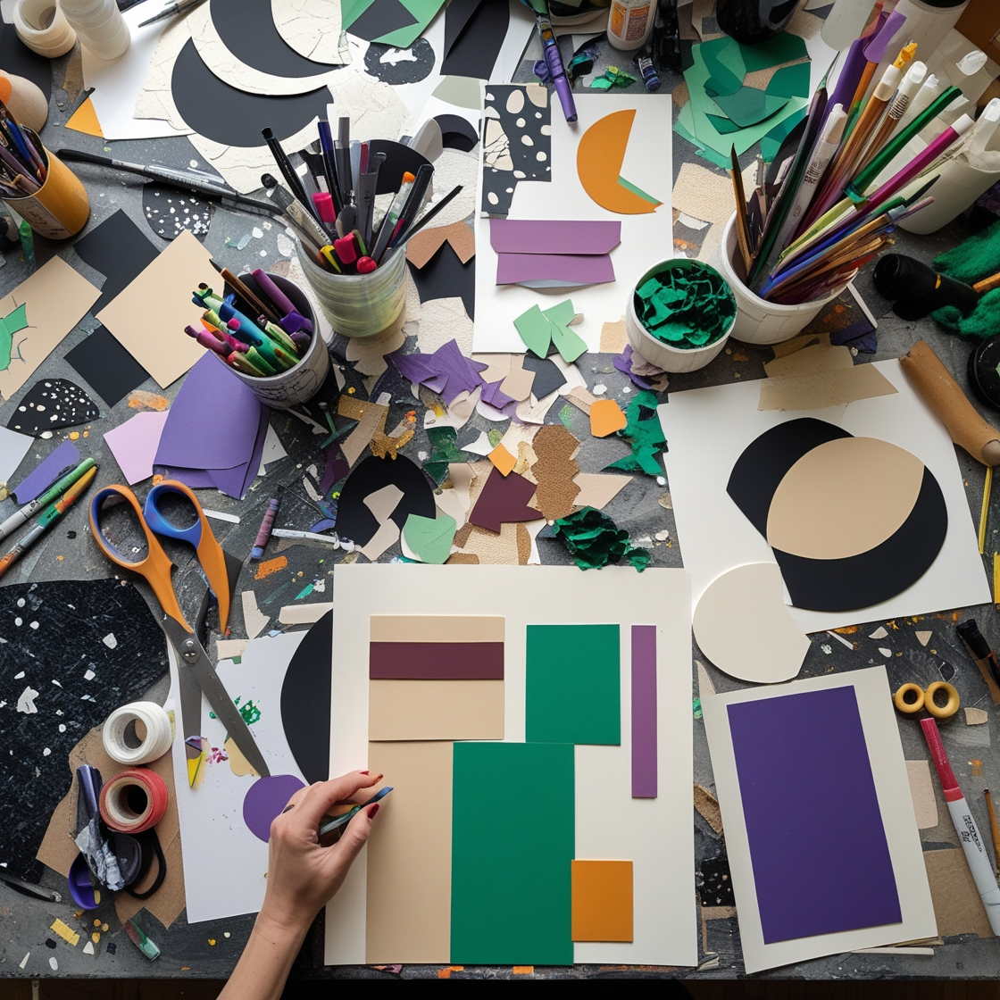
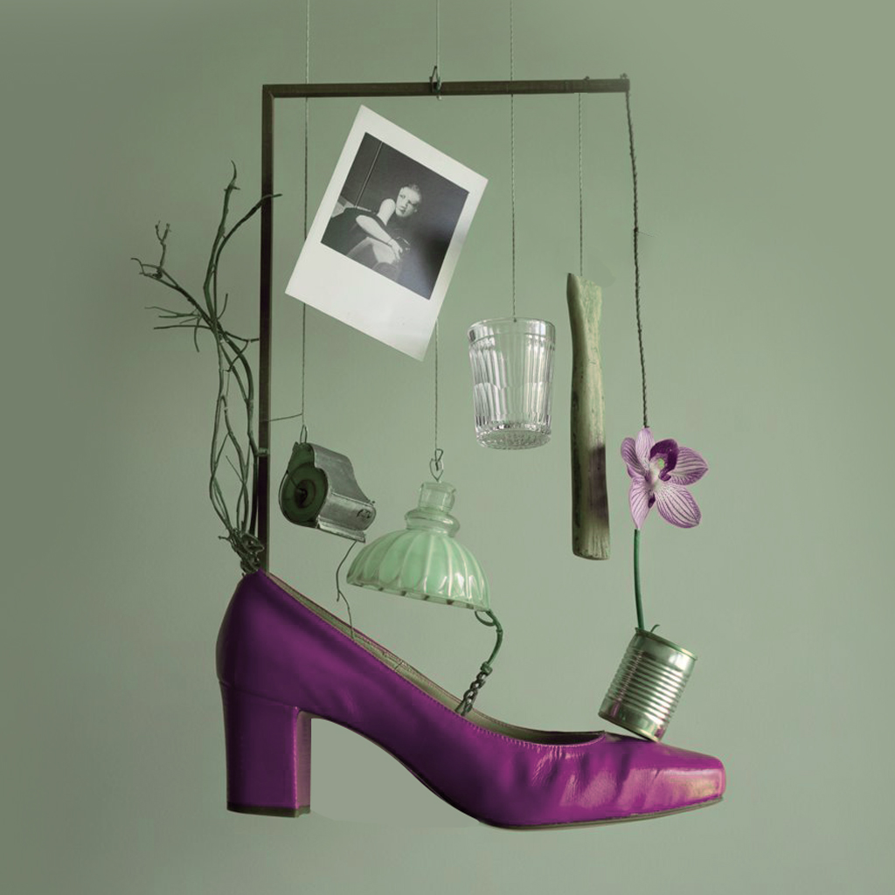
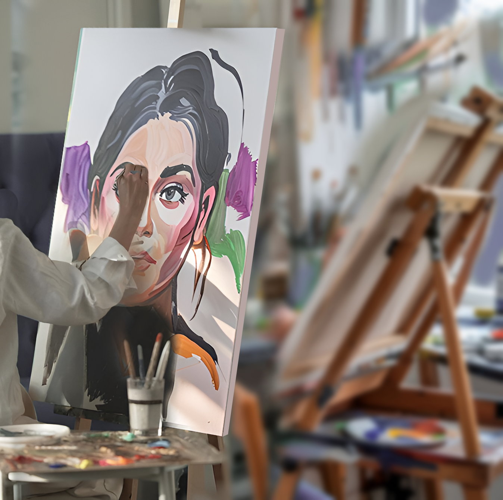

Арт-коучинг
Запишитесь на курс из 5 сессий
«Мы должны быть воображаемы»
и найдите свою персональную стратегию через искусство
Присоединяйтесь к нам
и начните свое творческое путешествие
Программа арт-коучинга
Программа состоит из 5 сессий
Продолжительность занятия 3 часа
-

Импровизационный рисунок цветом
Участники будут рисовать пальцами, отпуская контроль и позволяя эмоциям направлять процесс. Используя акрил, гуашь или краски для сенсорного самовыражения, они будут следовать внутренним состояниям, создавая яркие абстрактные композиции. В конце сессии мы проанализируем доминирующие цвета и их символику, что поможет выявить подсознательные желания и направления для дальнейшего самовыражения.
-

Абстракции
Участники будут создавать абстрактные картины, используя деконструкцию существующих образов. Будут исследовать новые способы самовыражения. Это процесс открытия и конструирования нового через взаимодействие цветов и форм.
-

Коллажи
В ходе сессии участники будут собирать коллажи из изображений, текстов и материалов, которые ассоциируются с их желаниями и целями. Каждый элемент коллажа будет символизировать конкретное намерение или мечту, а размещение этих элементов поможет выявить текущий фокус. В конечном итоге участники создадут карту маршрутов с визуальными «точками роста» для достижения своих целей.
-

Реди-мейд
В этой сессии участники будут использовать найденные объекты из повседневной жизни для создания арт-объектов. Они будут исследовать, как обычные вещи могут стать источником креативности и переосмысления ресурсов в их жизни. Завершится сессия рефлексией над тем, как "сломанные" аспекты жизни можно трансформировать в новые возможности.
-

Автопортреты
Создание автопортрета через смешанную технику. Каждый элемент будет символизировать различные аспекты идентичности и стремлений участников. Сессия завершится презентацией, где участники поделятся своими визуальными стратегиями на ближайшие пять лет.
Материалы на каждой сессии разные — от акрила до найденных объектов.
Групповой коучинг: рефлексия через восприятие своей творческой работы и через вопросы: «Какие черты проявляются через цвета?»
На кого рассчитан курс
Те, кто строит жизнь осознанно
- Целеустремленные профессионалы, мечтающие совместить карьерный рост с внутренней гармонией.
- Люди в поиске баланса между работой, личной жизнью и самореализацией.
- Сторонники визуального мышления — те, кто лучше воспринимает информацию через образы, а не списки.
«Застрявшие» на пути к мечте
- Те, кто устал от прокрастинации и хочет превратить абстрактные желания в конкретный план.
- Люди с «синдромом самозванца», сомневающиеся в своих силах и нуждающиеся в поддержке через метафоры искусства.
- Перфекционисты, которые боятся начать действовать из-за страха ошибки.
- Те, кто хочет прокачать уверенность в себе.
Любители экспериментов
- Поклонники арт-подходов и майндфулнесс, ищущие глубокую рефлексию через тактильные практики (рисование пальцами, коллажи).
- Скептики, которые хотят проверить, как «краски и хаос» помогут в решении бытовых задач.
- Поклонники современного искусства, которые хотят не только понимать, но и применять его принципы (абстракция, реди-мейд) в личной стратегии.
Искатели вдохновения
- Люди в творческом кризисе, которые хотят перезагрузить вдохновение через новые техники.
- Новички в искусстве, желающие раскрыть свой потенциал без страха «неправильно нарисовать».
Те, кто хочет понять себя
- Люди 30–50 лет, пережившие выгорание или кризис идентичности, которые видят в искусстве способ вернуть вкус жизни.
«Инвесторы в себя»
- Профессионалы, для которых творчество — способ снять стресс и найти баланс.
- Люди, инвестирующие в хобби с глубоким смыслом: для них программа станет не просто курсом, а «арт-объектом», который изменит их жизнь.
Корпоративные клиенты
- Команды творческих и продуктовых компаний, где креативность — ключевой ресурс.
- HR, внедряющие программы soft skills и нестандартного мышления для сотрудников.
Методы
-
Арт-коучинг
-
Нейропсихология
-
Персонология
-
Современное искусство
Что вы получите от программы?
-

Галерея работ, отражающих их внутренний мир и цели
-

Четкий визуальный план (можно оформить в рамку или цифровой формат)
-

Навыки творческого подхода к решению любых задач
-
Рекомендации по «домашним заданиям» (например, ежедневный скетч-дневник)
-

Чек-лист «Как внедрять стратегию через арт-практики»
Записаться на Арт-коучинг
ЗаписатьсяВедущие

Янита Войт
художник
Эксперт в управлении талантами
Сооснователь галереи современного искусства,
организатор и куратор резиденций,
культурных событий для арт-мира


Елена Семенова
коуч
Полимодальный психолог
Автор программ лидерского развития
через изменение паттернов
Executive и командный коуч лидеров и команд
Расписание и место
Когда? Где? Как пройти?
- Время: Субботы, 11:00–14:00.
- Место: Мастерская «Да-да!» Успенский пер., д. 5 (м. Тверская, Чеховская, сад Эрмитаж).
Цена участия